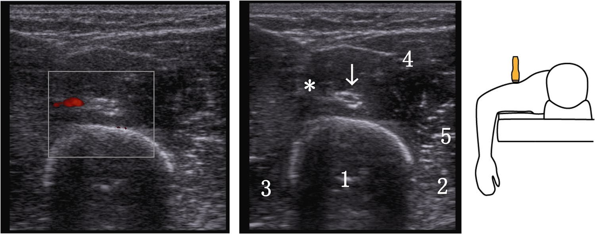

Respuesta clínica corta
¿Dónde cruza el nervio radial las caras dorsal y lateral del húmero?
En promedio, a 15,5 cm del epicóndilo lateral en dorsal y a 6,7 cm en lateral, equivalentes a cerca del 50 % y 21 % de la longitud humeral.
Dato claveDorsal 15,5 cm · lateral 6,7 cm · 38 voluntarios
El nervio radial cruzó la cara dorsal aproximadamente a la mitad del húmero y la lateral cerca del quinto distal; son referencias poblacionales, no sustitutos del rastreo individual.
Observado
Qué encontró y cómo interpretarlo
El estudio ofrece medidas bilaterales y una técnica de localización fácilmente comprensible.
La dispersión relativamente pequeña ayuda a orientar, pero no elimina variantes ni bifurcaciones tempranas.
No se midieron lesiones evitadas, resultados quirúrgicos ni acuerdo entre operadores.
Atlas del artículo
Imágenes para entender el procedimiento
Estas figuras proceden del artículo original y se reproducen con licencia abierta verificada. Se muestran por su utilidad anatómica o técnica, no como prueba aislada de diagnóstico o eficacia.

El panel muestra modo Doppler, modo B y el esquema de colocación del transductor en la cara dorsal.
Cómo leerlaLa posición ilustrada orienta el rastreo y no define una zona de seguridad individual.
Da Silva T y colaboradores. Figura reproducida bajo licencia CC BY 4.0; consulte el artículo original. · Fuente · Licencia CC BY.
Procedimiento del artículo
Rastreo ecográfico del nervio radial sobre el húmero
Con el participante en prono y hombro y codo flexionados a 90 grados, el nervio se sigue desde la cara dorsal hacia el septo intermuscular lateral y se proyectan dos puntos sobre la piel.
- Cruce dorsal
- 15,5 ± 1,3 cm
- Cruce lateral
- 6,7 ± 0,8 cm
- Ángulo medio
- 37 grados
- 01
Punto dorsal
Localizar nervio y arteria braquial profunda sobre la cara posterior del húmero.
- Referencias
- Húmero y cabezas medial y lateral del tríceps.
- Lectura
- El punto medio del húmero es una orientación, no una posición fija.
- 02
Punto lateral
Seguir distalmente hasta el cruce del septo hacia el compartimento anterior.
- Referencias
- Septo intermuscular lateral, braquial y ramas colaterales.
- Lectura
- Confirmar el trayecto individual antes de cualquier decisión invasiva.
Protocolo reconstruido de forma prudente desde el texto completo y sus figuras. Sirve para comprender la adquisición y no sustituye formación, razonamiento clínico ni supervisión.
Aplicabilidad
Qué significa clínicamente
Usar porcentajes de longitud solo para iniciar la búsqueda.
Rastrear el nervio y sus vasos acompañantes de forma individual.
Límite
Qué no permite afirmar
Muestra sana y tamaño moderado.
Sin fiabilidad interobservador comunicada.
Sin validación de seguridad durante cirugía o procedimientos.
Contexto
¿Se parece a tu paciente?
- Población estudiada
- 38 voluntarios sanos examinados bilateralmente, con 76 brazos y medidas dorsales y laterales del trayecto radial.
- Diseño
- Estudio anatómico ecográfico transversal en voluntarios
- Resultado evaluado
- Distancias, porcentajes de longitud y ángulo del trayecto
Fuente primaria
Lee el estudio, no solo nuestro análisis
Da Silva T, Mueck D, Knop C, Merkle T. Ultrasound-guided localization of the radial nerve along the humerus. Musculoskelet Surg. 2025;109(1):47-53. doi: 10.1007/s12306-024-00841-1
Responsabilidad editorial
Francisco José Extremera García
Fisioterapeuta colegiado ICPFA 4288 · Osteópata D.O.
Creador y responsable editorial de FisioLógico
- Última revisión
- Conflictos de interés
- Ninguno declarado.